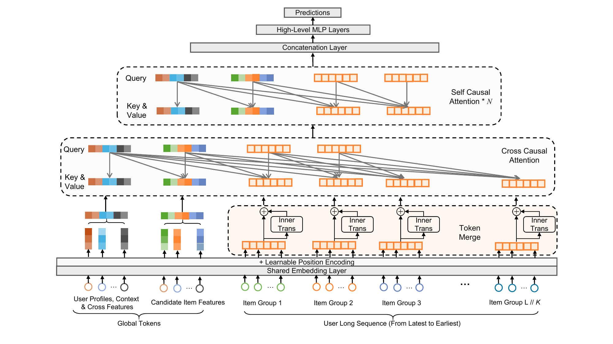
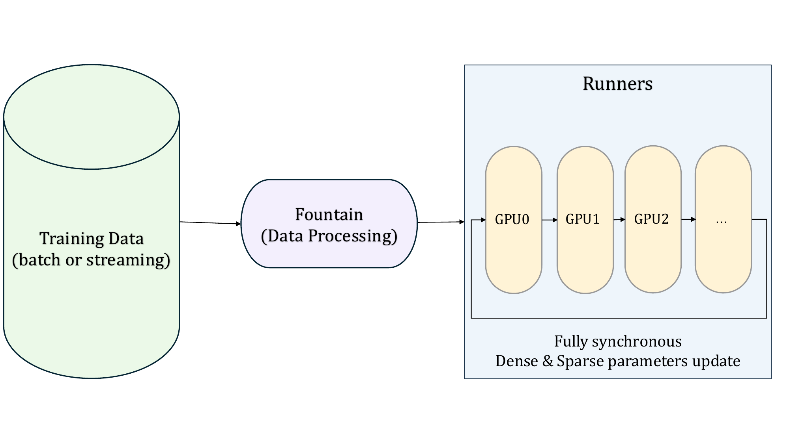
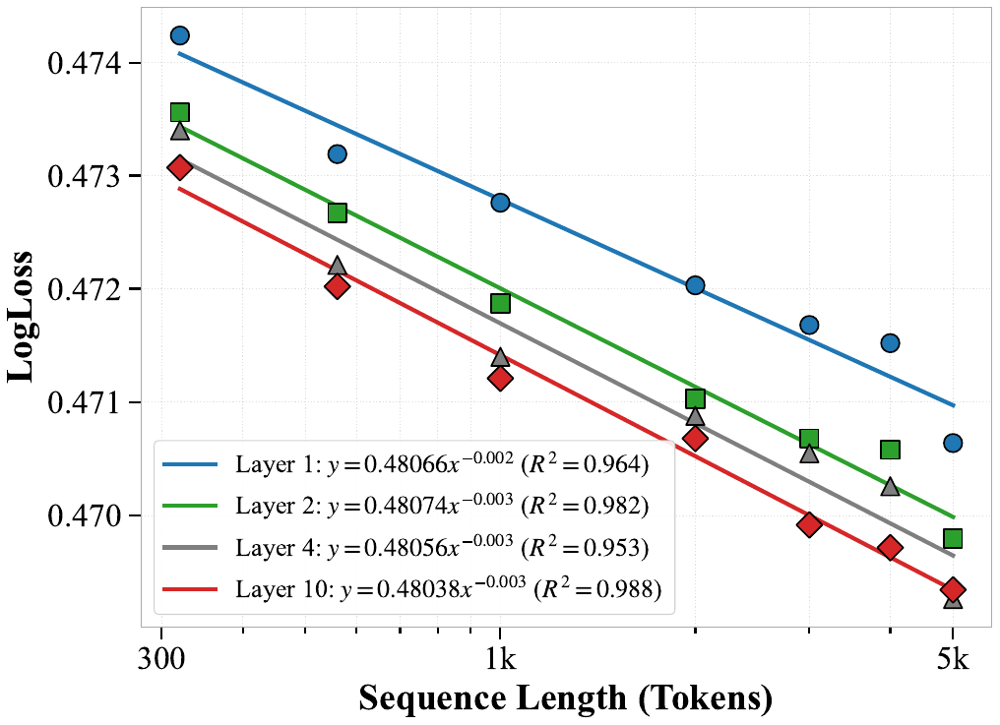

LONGER: Scaling Up Long Sequence Modeling in Industrial Recommenders
Introduction
Ultra-long user behavior sequences capture both long- and short-term preferences. Current industry practice uses two-stage retrieval (e.g. SIM, TWIN), pre-trained user embeddings, or memory-augmented models—leading to upstream–downstream inconsistency or indirect modeling. We aim for end-to-end ultra-long sequence modeling with GPU efficiency.
Contribution: We present LONGER (Long-sequence Optimized traNsformer for GPU-Efficient Recommenders): (i) global tokens for stable attention; (ii) token merge + InnerTrans + hybrid attention (~50% FLOPs reduction); (iii) mixed-precision & recompute, KV cache serving, and synchronous GPU training/serving. LONGER scales sequence length to 10,000 end-to-end and is deployed in dozens of scenarios at ByteDance.
Methodology
- Global tokens: Target item, UID, CLS, etc., for global anchoring and stable attention.
- Token merge: Group adjacent tokens (factor K); optional InnerTrans within groups to keep local interactions. Reduces sequence length and ~50% FLOPs.
- Hybrid attention: First layer = cross-causal attention (query = global + sampled recent tokens); subsequent layers = self-causal attention. Enables KV cache serving (user sequence computed once, reused across candidates).
- Engineering: Fully synchronous training/serving; dense + sparse on GPU; mixed-precision & activation recomputation; KV cache at inference.



Results
Offline (Douyin Ads, CVR, 5.2B samples): LONGER achieves AUC 0.85290, LogLoss 0.47103—+1.57% AUC / −3.39% LogLoss vs base; +0.21% AUC vs strongest baseline (Transformer) with much lower FLOPs. Ablation: TokenMerge + InnerTrans and “recent k” query selection (e.g. k=100) give best trade-off.
| Model | AUC↑ | LogLoss↓ | ΔAUC(%) |
|---|---|---|---|
| Base | 0.83968 | 0.48758 | — |
| DIN (Recent50) | 0.84698 | 0.47830 | +0.87 |
| Transformer | 0.85111 | 0.47293 | +1.36 |
| LONGER | 0.85290 | 0.47103 | +1.57 |
Scaling: AUC and LogLoss follow power-law with sequence length, FLOPs, and parameters; longer sequences and appropriate depth improve performance.


Online A/B: Douyin Ads (ADSS/ADVV): +1.06%–2.10% across Live/Short Video/Mall. Douyin E-Commerce (Order/U, GMV/U): +4.6%–7.9% (Live), +4.6%–5.3% (Short Video).
Discussion / Conclusion
LONGER enables end-to-end ultra-long sequence modeling in industrial recommenders via global tokens, token merge with InnerTrans, hybrid causal attention, and system optimizations. It improves both offline metrics and online A/B in ads and e-commerce at ByteDance, with lower computation and latency. Future work: more efficient sequence modeling and cross-domain behavior modeling.
References
- Chai et al. LONGER: Scaling Up Long Sequence Modeling in Industrial Recommenders. RecSys 2025.
- SIM (Pi et al.), TWIN (Chang et al.), DIN (Zhou et al.), HSTU (Zhai et al.), M-FALCON — baselines and related work.